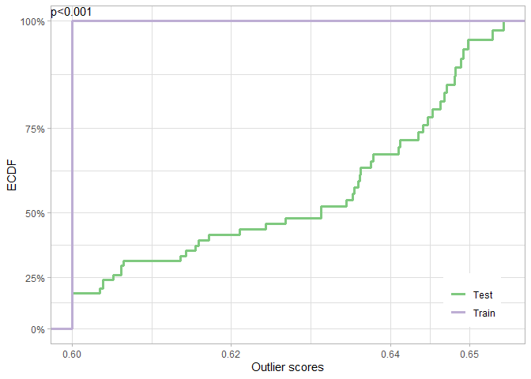

Overview
dsos tests for no adverse shift based on outlier scores. Colloquially, these tests check whether the new sample is not substantively worse than the old sample, not if the two are equal as tests of equal distributions do. dsos implements a family of two-sample comparison which assumes that we have both a training set, the reference distribution, and a test set.
Installation
If the package is on CRAN, install with
install.packages("dsos")Assuming you have found this repo on Github, install with:
remotes::install_github("{who}/dsos")
# Replace {who} with the appropriate user (could be an organization)Example
Use dsos to test for adverse shift on the iris dataset. Here, the outlier scores are from extended isolation forest for density-based out-of-distribution (OOD) detection:
library(dsos)
set.seed(12345)
data(iris)
versicolor <- iris[51:100,1:4] # Training sample: Species == 'versicolor'
virginica <- iris[101:150,1:4] # Test sample: Species == 'virginica'
iris_test <- od_pt(x_train = versicolor, x_test = virginica)
plot(iris_test)
Among others, dsos also implements a method for confidence-based OOD detection via prediction (resampling) uncertainty.
Reference
To cite this work and for technical details, please refer to the arXiv paper. Sample Bibtex is given below: